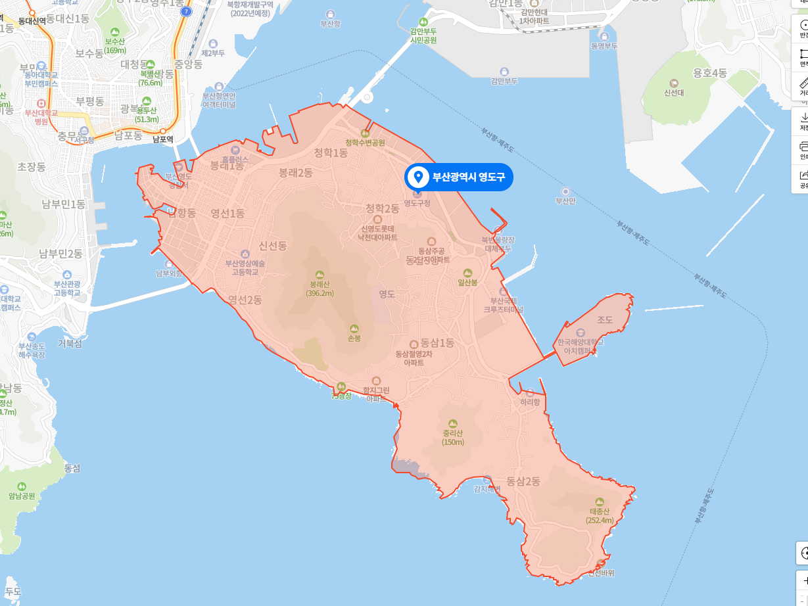

내 tmi
(홈으로)
나에 대하여(tmi)
[기본정보]
[취미]
[좋아하는 색조합]
//기본정보//
나는 2002년 12월 10일 부산 영도에서 태어났다.
이후 시흥에서 2년, 서울의 장안동에서 10년을 지냈고, 지금은 상왕십리에 산다.
하지만 우리 가족들이 전부 부산에서 나고 자랐기 때문에 나도 가끔 사투리가 튀어나온다.

지금은 거의 폐허다. 가지 않는걸 추천한다.
//2021년도 3월의 취미//
게임
블랙서바이벌 영원회귀
issac_rebirth
Luck to be a landload
그림
Aspite를 이용한 픽셀아트
요리
베이킹
조주
//좋아하는 색 조합//
잠이 안깰때 이 색을 보면 눈이 아파서 깬다
잘 어울리고 쨍해서 바다에 간것같다
밤하늘 같은 조합이라 좋다
(상단으로)